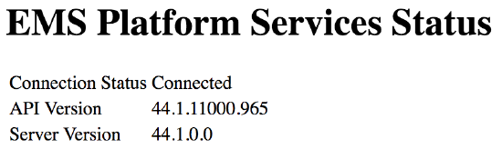

Process Overview:
To install EMS Platform Services (which provides access to a Restful API), you will
| Installer Prompt | Description |
|---|---|
| SQL Instance Name | Server hosting SQL Server instance. |
| Database Name | Name of EMS Database. |
| Use Windows Authentication For Database Connection | Check this box to use windows authentication for access to the EMS database. Uncheck the box to use the default 'emsuser' SQL Server Authentication account. |
| Virtual Directory Name | IIS virtual directory name to give to the EMS Platform Services (default is 'EmsPlatform'). |
| Enable NTLM For EMS Everyday User Authentication | Check this box if web users will be authenticated using Windows NTLM authentication. |
3. After running the installer, the following new folder should be created as the destination for EMS Platform Services logs:
C:\ProgramData\EMS Software\Ems.Platform.Api
To validate that the above installation was successful

If connection to SQL Server is made using tcp, on a port other than the default 1433, then the platform configuration needs to be updated.
Add a "Port" attribute to the existing connection string, after the "Server" attribute and before the "Database" attribute.
"connectionString": "Server=<servername>;Port=1234;Database=<dbname>;Connect Timeout=30;"
Save changes and restart IIS.
"logFilePath": "C:\\ProgramData\\EMS Software\\Ems.Platform.Api\\api.log"
<add key="APILogFileDirectory" value="c:\ProgramData\EMS Software\Ems.Platform.Services\" />
Page tags: article:topic